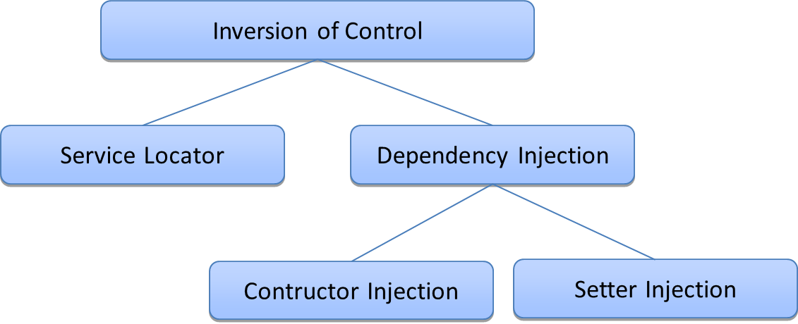
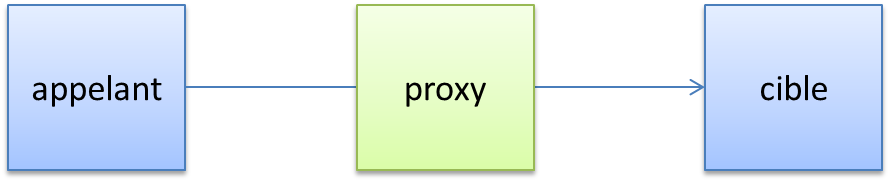

L'injection de dépendances
L'application comme un graphe d'objets

Une application est un réseau riche de composants qui dépendent les uns des autres.
Comment gérer les dépendances ?
Si le composant instancie lui même ses dépendances.
public class SimpleService {
// dépendance
private Database database;
public SimpleService() {
this.database = new Database(...);
}
public void updateDatabase() {
database.doUpdateDatabase();
}
...
}
- Où est configuré le paramétrage de new Database ?
- Comment partager la même instance de database ?
- Qui libère la ressource database ?
L'application en 2 temps
On divise la vie de l'application en 2 temps
- La contruction des composants
- Les appels entre les composants
La construction des composants est elle même divisées en 2 étapes
- Instanciation ( new MonComposant(...) )
- Mise en relation (wiring / injection)
C'est l'Inversion of Control : les composants perdent le controle de leur propre construction.
Inversion of control
Il existe plusieurs techniques afin de mettre en place l'IoC.

- Le service locator permet d'obtenir des références à partir d'un registre centralisé
- L'injection par constructeur apporte les dépendances lors de l'appel au constructeur
- L'injection par setter apporte les dépendances en utilisant les accesseurs (setters)
Une explication plus longue sur ces différentes options est disponible sur la page Inversion of Control du site de Martin Fowler.
En java
Jee a poussé le Service Locator (registre jndi) et les descripteur de déploiements.
Les conteneurs d'application tournait autour de ces patterns.
La communauté a choisi les conteneurs légers basé sur l'injection de dépendances.
Ils sont apparus vers 2003 et reposent sur l'injection de dépendances.
- La mise en place est simple
- L'empreinte mémoire est faible
- Le temps de démarrage est court
- Ils favorisent les bonnes pratiques objet
- Il est possible de faire des tests unitaires
- Il est possible de faire fonctionner l'application en dehors d'un serveur d'application
Les conteneurs léger les plus connus sont : spring framework, guice et picocontainer.
Aujourd'hui jee, avec CDI, a rejoint ce mode de pensée.
POJOs
Les conteneurs légers glorifient les Plain Old Java Objects (POJOs).
Nous nous sommes demandés pourquoi tout le monde était autant contre l'utilisation d'objets simples dans leurs systèmes et nous avons conclu que c'était parce que ces objets simples n'avaient pas un nom sympa. Alors, on leur en a donné un et ça a pris tout de suite
Martin Fowler, Rebecca Parsons et Josh MacKenzie
C'est de la bonne vieille conception objet (comprendre hors jee).
Spring framework
Spring est un conteneur léger par injection de dépendances.

En plus de l'IoC, c'est une boite à outils riche pour les applications jee.
Une vision rapide de ce que fait spring est disponible sur la page d'introduction à spring
Démarrage d'un contexte spring
La configuration canonique de spring se fait via un fichier xml définissant le context spring.
<?xml version="1.0" encoding="UTF-8"?> <beans> <bean id="..." class="..."> <!-- configuration du bean ici --> </bean> <!-- plus de beans ici --> </beans>
C'est une liste de beans qui seront chargés au démarrage de l'application.
Le contexte peut être chargé avec le code suivant
ApplicationContext ctx = new ClassPathXmlApplicationContext("context.xml");
Des beans spring
Imaginons deux services qui collaborent.

Voici la configuration spring nécessaire.
<bean id="simpleService" class="x.y.z.SimpleService">
<property name="otherService" ref="otherService">
</bean>
<bean id="otherService" class="x.y.z.OtherService" />
Et la récupération d'un bean dans le contexte.
SimpleService simpleService = (SimpleService) ctx.getBean("simpleService")
@Inject
Il est possible d'activiter les annotations afin d'injecter les dépendances.
public class SimpleService {
@Inject
private OtherService otherService;
public void call() { otherService.doSomethingUseful(); }
}
Avec le contexte suivant.
<!-- active les annotations -->
<context:annotation-config/>
<bean id="serviceA" class="x.y.z.ServiceAImpl" />
<bean id="serviceB" class="x.y.z.ServiceB" />
@Inject est le standard jee, spring supporte aussi sa propre annotation @Autowired et une autre annotation standard @Resource.
@Component
On peut aussi demander à spring de chercher les composants dans le classpath.
<!--scan le package x.y.z-->
<context:component-scan base-package="x.y.z"/>
Tous les composants annotés dans les packages sous x.y.z seront chargés.
@Service
public class OtherService {
public void doSomethingUseful() { ... }
}
@Service
public class SimpleService {
@Inject
private OtherService otherService;
public void call() { otherService.doSomethingUseful(); }
}
@Component est l'annotation générique.
@Service, @Repository ou bien @Controller sont plus précis sémantiquement.
Aspect Oriented Programming
La délégation du wiring à spring offre la possibilté d'intercaler du code entre les appels.

Cette approche est appelée Aspect Oriented Programming et peut être mis en place de plusieurs façons :
- Création d'un proxy dynamique : création d'une classe à partir d'une interface (jdk)
- à la compilation : les aspects sont ajoutés au moment de la compilation
- au chargement : les aspects sont ajoutés au moment du démarrage de l'application.
C'est particulièrement utile afin de factoriser des traitements orthogonaux au code métier.
La nomenclature de l'AOP est complexe : advice, crosscuting, join point, point cut..., mais le principe reste simple : exécuter du code entre l'appelant et l'objet cible.
Exemple AOP : les transactions
La gestion des transactions est lourde.
public void doSomethingUseful() {
Connection con = null;
try {
con = dataSource.getConnection();
con.setAutoCommit(false); // Activer les transactions
stmt = con.createStatement();
stmt.executeUpdate("update my_table set stock = 3 where id = 15");
con.commit(); // Commit de la transaction
} catch (Exception e) {
// Rollback de la transaction en cas d'erreur
if (con != null) { con.rollback(); }
} finally {
// Libération des ressources
if (con != null) { con.close(); }
}
}
Sauf que ce code de gestion est toujours le même.
@Transactional
Grâce à l'AOP et un gestionnaire de transaction, on peut simplifier le code précédent.
@Transactional
public void doSomethingUseful() {
Connection conn = DataSourceUtils.getConnection(dataSource);
stmt = con.createStatement();
stmt.executeUpdate("update my_table set stock = 3 where id = 15");
}
Avec la configuration suivante
<!-- activer les annotations @Transactional --> <tx:annotation-driven transaction-manager="txManager"/> <!-- le gestionnaire de transaction --> <bean id="txManager" class="org.springframework.jdbc.datasource.DataSourceTransactionManager"> <!-- la dataSource est définie ailleurs --> <property name="dataSource" ref="dataSource"/> </bean>
Autres services
Spring c'est un conteneur léger mais aussi une boite à outils.
- Accès aux données : support pour les ORM et jdbc
- Mapping Objet - Xml (OXM) : support pour JAXB, Castor, XMLBeans, JiBX et XStream
- Framework MVC 2 et Portlets
- Remoting : RMI, HTTP, REST, Burlap, Hessian...
- Intégration avec les EJBs
- Message Driven Beans et envoi de messages JMS
- Simplification de JMX
- Envoi d'email
- Simples schedulers et support pour Quartz
- Et biens d'autres au travers de modules...
L'étendue de ses capacités a porté spring bien au-delà d'un framework IOC.
Il est donc difficilement comparable à d'autres framework IOC (comme Guice par exemple).
A Lire
Spring est un facilitateur des technologies jee.
Sa documentation apporte des solutions aux problèmes courants mais aussi une cartographie assez complète du monde jee.
Sa lecture est donc un bon point de départ pour l'univers "entreprise" de java.